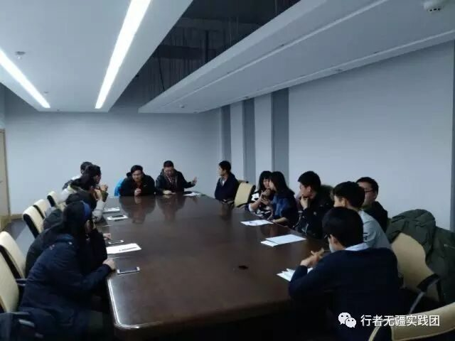
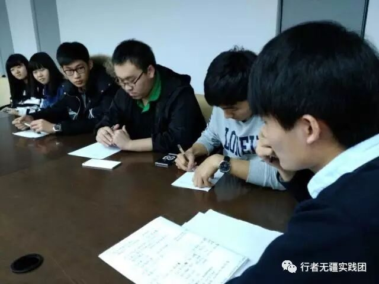
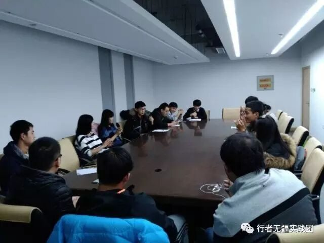

“行者无疆”实践团成员见面会
点击“蓝色”关注
行者无疆实践团

关于我们

“行者无疆”，调研类社会实践团队，旨在中华大地完成旅行、文化调研等诸多任务，踏遍千万里锦绣河山，品读上下五千年文化。第一期“行者无疆”社会实践团队将首先踏上齐鲁大地，追寻孔孟文化，重温水浒梁山，吟唱沂蒙小调......之后每期团队将前往不同地区进行实践，描绘出属于大工盘锦的“文化地图”、“人文坐标”。

成员见面会
2016年12月12日晚八点，第一期“行者无疆”实践团于E02召开了成员见面会。纵使天黑路滑，妖风呼啸，大家依然怀着满心的热情准时到达开会地点，期待着与新朋友的相识。


本次见面会分为三方面进行。
首先是自我介绍，由队长开始依次轮流介绍自己，然后进行了轮流说每个人名字的游戏环节，以此加强相互之间的熟悉度。
在此过程中大家逐渐熟悉、亲近，在大家认真的目光中可以看出，每个人已经为这次社会实践做好了充分的准备。
2
接下来队长李含笑仔细安排了团队的分工。将队员分成外联、调研、后勤、财务、设计、摄影、文字纪实、宣传八类专员，介绍了每一类专员的职责，并任命了四位副队长协助管理团队，同时描绘了团队近期规划，安排了现阶段任务。做到有原则不乱，有计划不忙，有预算不穷。
3
最后团队确定了实践路线，实践团将在山东的济南、泰安、曲阜三地，进行历时五天的文化调研社会实践活动，志在通过此次“文化苦旅”，领会到行者的精神。


一起期待“行者无疆”实践团之后的进展吧！

文字：崔丹
图片：张正
编辑：王均黎
审核：李含笑